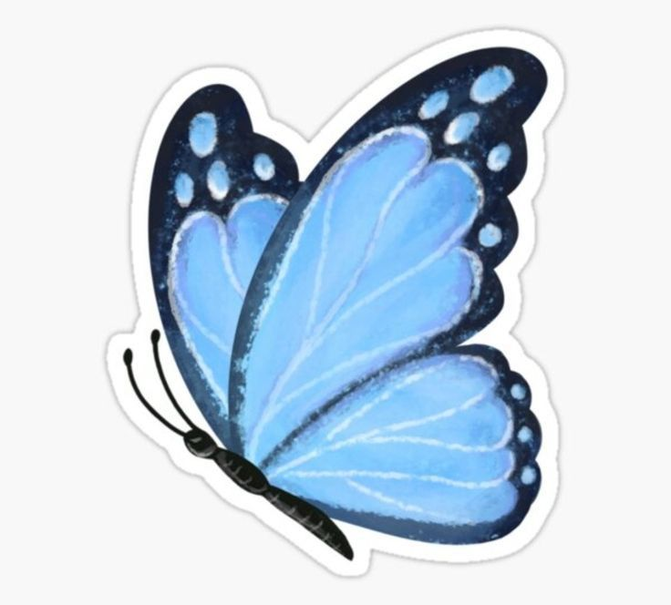
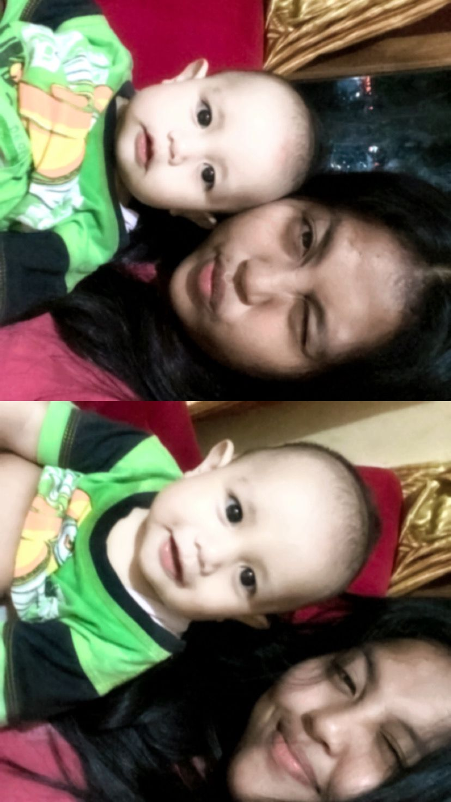
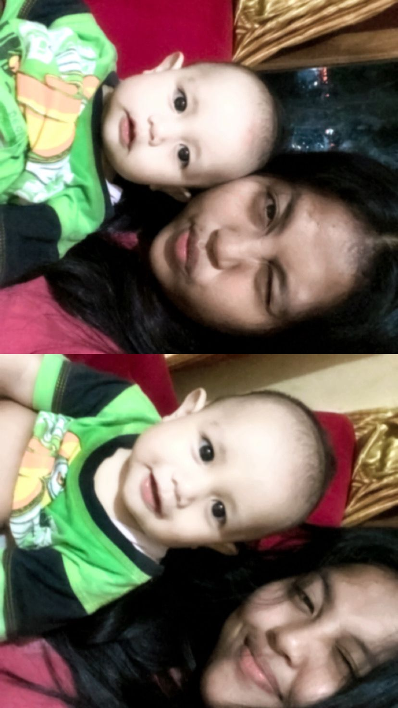

You Know Who You Are
Believe Your Self 
“ Jangan tanyakan pada dirimu apa yang dibutuhkan dunia. Bertanyalah apa yang membuatmu hidup, kemudian kerjakan. Karena yang dibutuhkan dunia adalah orang yang antusias” - Harold Whitman
Sadari kekuatan, talenta, dan minat terbaik dalam dirimu dan jangan tergoda untuk mengurusi kelebihan dan kekuatan orang lain. Fokuskan energimu untuk menjadi yang terbaik. Telusuri minat dan lakukan hal-hal yang kamu sukai dengan ikhlas dan terus belajar. Bila perlu tanyakan pendapat orang-orang terdekatmu karena mungkin mereka mengetahui kekuatan yang mungkin tidak kamu sadari.
Photo Collection
The Best Ever After
Mungkin hanya sebuah kumpulan gambar, tetapi untuk kenangan yang ada itu adalah sebuah arti makna yang sangat mendalam. Karena dimana semuanya tidak bisa diputar kembali, yang ada hanyalah sebuah kenangan yang membekas


 

Di sini Anda dapat menemukan berbagai informasi menarik tentang seni, olahraga, dan teknologi.
Musik: Pengaruh Musik dalam Kehidupan Manusia
Musik memiliki peran yang penting dalam kehidupan manusia. Artikel ini membahas tentang pengaruh musik dalam berbagai aspek kehidupan, mulai dari pengaruhnya terhadap suasana hati hingga peran musik dalam industri hiburan.
Teknologi: Perkembangan Terbaru dalam Dunia Teknologi
Teknologi terus berkembang pesat dan memiliki dampak besar dalam kehidupan kita sehari-hari. Artikel ini membahas beberapa perkembangan terbaru dalam dunia teknologi, seperti kecerdasan buatan, kendaraan otonom, dan Internet of Things.
Sejarah Kemerdekaan Indonesia: Perjuangan Menuju Kemerdekaan
Sejarah kemerdekaan Indonesia merupakan perjalanan panjang dan penuh perjuangan. Artikel ini mengupas tentang peristiwa-peristiwa penting dalam perjuangan menuju kemerdekaan Indonesia, termasuk proklamasi kemerdekaan pada tanggal 17 Agustus 1945.